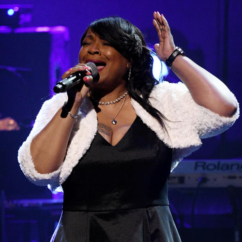

Cheryl Pepsii Riley
Cheryl Bridget "Pepsii" Riley is an American singer and actress. Riley is best known for her music during the late 1980s through the early 1990s; most notably, 1988's R&B ballad "Thanks for My Child". Riley also starred in Tyler Perry's stage plays including; Madea's Class Reunion (2003) and Why Did I Get Married? (2006).
Complete Discography & Tracklists (5)
1988 Me, Myself and I 🎵 0 Tracks
No tracks registered.